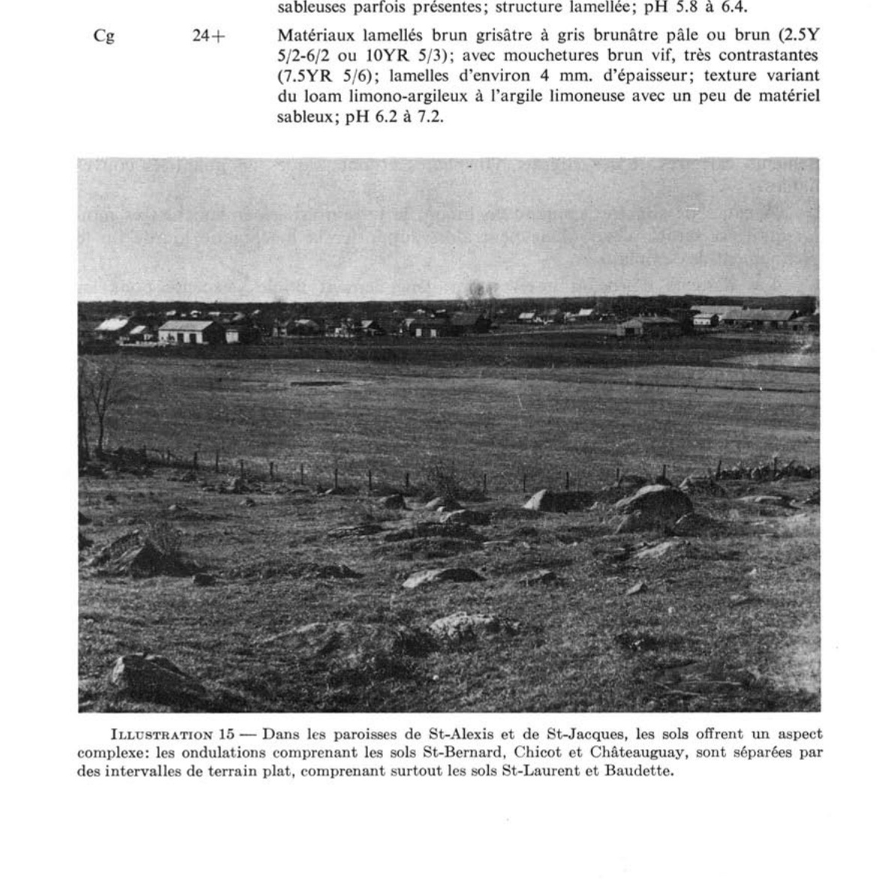
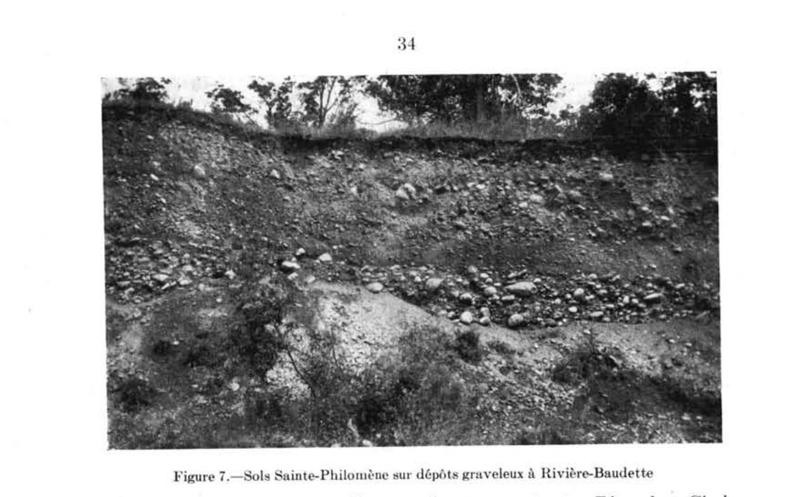
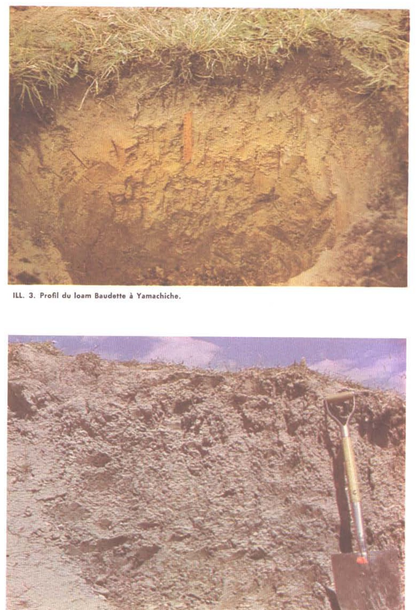

Identification & Caractéristiques Générales
Les sols de la série Baudette se sont développés sur des dépôts fluviomarins ou alluvionnaires limoneux à sablo-limoneux d'une épaisseur variant généralement de 2 à 6 pieds, lesquels reposent en discordance sur le substratum d'argile marine de la mer de Champlain. Ces dépôts superficiels présentent une stratification hétérogène caractérisée par l'alternance de minces couches de limon, de loam, de loam argilo-limoneux et de loam sableux très fin. Géomorphologiquement, ces sols occupent des positions topographiques planes à légèrement ondulées, caractérisées par des pentes faibles et un micro-relief peu prononcé, à des altitudes généralement comprises entre 160 et 220 pieds. La pierrosité de surface est absente ou négligeable.
Le profil pédologique présente un drainage naturel variant d'imparfait à pauvre, ainsi qu'un égouttement interne restreint. Bien que les horizons supérieurs meubles et perméables absorbent efficacement les eaux de précipitation, la percolation verticale est entravée par la présence de l'argile sous-jacente sub-imperméable, ce qui provoque la formation d'une nappe perchée temporaire et génère des conditions hydromorphes visibles par la présence de tachetures dans le sous-sol. La réaction du sol est acide, nécessitant des apports calciques pour neutraliser l'acidité échangeable. La compacité des horizons inférieurs et la texture limoneuse confèrent à ce sol une sensibilité marquée au compactage en cas de ressuyage insuffisant.
Sur le plan agronomique, les sols Baudette possèdent une bonne fertilité naturelle et se prêtent favorablement aux grandes cultures ainsi qu'aux cultures fourragères lorsque les contraintes hydriques et chimiques sont corrigées. Les limitations majeures relèvent de l'excès d'eau saisonnier et de l'acidité, lesquelles restreignent la persistance des légumineuses sensibles telles que la luzerne. L'aménagement requis repose impérativement sur l'installation d'un réseau de drainage souterrain (tuyauterie) combiné à un chaulage régulier. Une telle régie permet d'améliorer la portance, d'optimiser le profil cultural et d'obtenir des rendements élevés et stables pour l'ensemble des cultures de la zone tempérée froide.
Classification Taxonomique & Environnement Pédologique
| Ordre Pédologique | Podzolique |
|---|---|
| Grand Groupe (SCSS) | Podzol humo-ferrique |
| Sous-Groupe Taxonomique | Podzol humo-ferrique orthique |
| Famille Pédologique | Squelettique-loameuse, mixte sableux, acide |
| Mode de Dépôt Parental | Morainique |
| Classe de Drainage Naturel | Bien drainé |
| Régime Thermique & Humidité | Frais / Humide |
Description Morphologique du Profil Type
Séquences génétiques des horizons pédologiques caractérisant le profil type représentatif de la série Baudette :
Profil représentatif — Comté de Argenteuil
✓ Source : Comté de Argenteuil — Page 78Couleur Munsell : Non précisée
Structure & Consistance : Polyédrique à granulaire
Description morphologique : Terre franche limoneuse à terre franche argilo-limoneuse, granuleuse, brun grisâtre; friable; pH 5.2-5.8.
Couleur Munsell : Non précisée
Structure & Consistance : Polyédrique à granulaire
Description morphologique : Terre franche limoneuse brun grisâtre, généralement en feuillets; quelques tachetures de gris jaunâtre clair et de brun; friable; pH 5.4-6.0.
Couleur Munsell : Non précisée
Structure & Consistance : Polyédrique à granulaire
Description morphologique : Terre franche brune et terre franche limoneuse avec quelques tachetures de gris et de brun rouille; en feuillets; très friable; pH 5.8-6.2.
Couleur Munsell : Non précisée
Structure & Consistance : Polyédrique à granulaire
Description morphologique : Matériaux brun jaunâtre foncé variant en texture de terre franche sableuse fine à terre franche limoneuse et à terre franche argilo-limoneuse; fortement tachetés; perméables et friables; pH 5.8-6.4.
Couleur Munsell : Non précisée
Structure & Consistance : Polyédrique à granulaire
Description morphologique : Argile marine.
Profil cultivé (agricole) — Comté de Gatineau
✓ Source : Comté de Gatineau — Page 44Couleur Munsell : Non précisée
Structure & Consistance : Granuleuse
Description morphologique : Loam limono-argileux à loam limoneux brun grisâtre; structure granuleuse; friable; pH 5.6 à 6.2.
Couleur Munsell : Non précisée
Structure & Consistance : Polyédrique à granulaire
Description morphologique : Loam limono-argileux à loam limoneux brun grisâtre; marbrures brunes et gris brunâtre pâle; généralement lamellé; souvent interstratifié de minces couches de loam sableux fin; friable et légèrement plastique; pH 5.8 à 6.4.
Couleur Munsell : Non précisée
Structure & Consistance : Polyédrique à granulaire
Description morphologique : Loam limono-argileux à loam limoneux, avec minces interstratifications de loam sableux très fin, gris brunâtre pâle avec marbrures de brun jaunâtre foncé; pH 5.8 à 6.4. (Cet horizon est parfois absent).
Couleur Munsell : Non précisée
Structure & Consistance : Polyédrique à granulaire
Description morphologique : Argile marine grise, très plastique et imperméable; pH 6.6 à 7.2.
Profil cultivé (agricole) — Comté de L'assomption
✓ Source : Comté de L'assomption — Page 74Couleur Munsell : 2.5Y 4/2
Structure & Consistance : Granuleuse
Description morphologique : Loam limono-argileux (parfois loam argileux) brun grisâtre foncé (10YR-2.5Y 4/2); fine structure granuleuse; perméable; pH 5.5 à 6.0.
Couleur Munsell : 10YR 5/3 (matrice), 2.5Y 6/2 (marbrures)
Structure & Consistance : Lamellée
Description morphologique : Matériel brun à brun jaunâtre avec fines mouchetures brun pâle et gris brunâtre pâle (10YR 5/3-5/4-6/3 et 2.5Y 6/2); texture moyenne de loam limono-argileux, mais variant du loam au loam argileux et au loam limoneux dans les diverses minces couches dont l'horizon est formé; structure lamellée; faible plasticité; lentement perméable; pH 5.5 à 6.0.
Couleur Munsell : 7.5YR 5/8 (matrice), 5Y 6/2 (marbrures)
Structure & Consistance : Lamellée
Description morphologique : Loam argileux à loam brun avec mouchetures de gris brunâtre pâle et gris olive pâle (7.5YR 5/8 et 10YR-5Y 6/2), quelques couches sableuses parfois présentes; structure lamellée; pH 5.8 à 6.4.
Couleur Munsell : 7.5YR 5/6 (matrice), 2.5Y 5/2 (marbrures)
Structure & Consistance : Polyédrique à granulaire
Description morphologique : Matériaux lamellés brun grisâtre à gris brunâtre pâle ou brun (2.5Y 5/2-6/2 ou 10YR 5/3); avec mouchetures brun vif, très contrastantes (7.5YR 5/6); lamelles d'environ 4 mm. d'épaisseur; texture variant du loam limono-argileux à l'argile limoneuse avec un peu de matériel sableux; pH 6.2 à 7.2.
Profil représentatif — Sols de l'île de Montréal
✓ Source : Sols de l'île de Montréal — Page 50Couleur Munsell : Non précisée
Structure & Consistance : Granulaire
Description morphologique : Terre franche limoneuse brun grisâtre à brun grisâtre foncé (2.5yr5/2-4/2); structure granulaire; friable; pH 5.3.
Couleur Munsell : Non précisée
Structure & Consistance : Lamellaire très mince
Description morphologique : Terre franche ou terre franche limoneuse brun grisâtre (10yr4/2-5/2); tachetures moyennes et modérément contrastantes de gris brunâtre clair et de brun (2.5y6/2-7.5yr4/4); structure lamellaire très mince; non plastique; friable; pH 5.5.
Couleur Munsell : 7.5YR 4/4
Structure & Consistance : Lamellaire et granulaire faible
Description morphologique : Terre franche brune (7.5yr4/2-10yr4/3) avec couches de terre franche sableuse fine; tachetures à fort contraste et très grossières de gris et de brun ou de brun rouille (5y6/1-7.5yr 4/4-5yr5/6); structure lamellaire et granulaire faible; très friable; pH 6.0.
Couleur Munsell : Non précisée
Structure & Consistance : Ou faible structure en miettes
Description morphologique : Terre franche sableuse fine légère ou terre franche limoneuse brun jaunâtre foncé (10yr4/4); marbrures à fort contraste de gris clair et de brun (5y6/1-7.5yr5/4); sans structure ou faible structure en miettes; très friable ou presque lâche; pH 5.8.
Profil représentatif — Comté de Soulanges
✓ Source : Comté de Soulanges — Page 46Couleur Munsell : Non précisée
Structure & Consistance : Granulée fine
Description morphologique : Terre franche limoneuse gris brunâtre, structure granulée fine, friable; pH 5.3-6.0.
Couleur Munsell : Non précisée
Structure & Consistance : Polyédrique à granulaire
Description morphologique : Terre franche limoneuse gris brun pâle, friable (souvent absent).
Couleur Munsell : Non précisée
Structure & Consistance : Feuilletée
Description morphologique : Terre franche à terre franche limoneuse gris brun avec marbrures gris pâle et brun rouille; structure feuilletée, friable; non plastique; pH 5.5-6.2.
Couleur Munsell : Non précisée
Structure & Consistance : Feuilletée
Description morphologique : Terre franche limoneuse gris brun alternant avec des couches de terre franche sableuse micacée très fine. Légèrement marbrée de rayures ou taches orange et brun rouille. Structure feuilletée, pH 5.7-6.5.
Couleur Munsell : Non précisée
Structure & Consistance : Granuleuse quelque peu plastique
Description morphologique : Argile limoneuse grise, quelques marbrures, structure granuleuse quelque peu plastique, pH 5.8-6.5.
Couleur Munsell : Non précisée
Structure & Consistance : Polyédrique à granulaire
Description morphologique : Argile grise (profondeur: 2 à 5 pieds de la surface).
Profil représentatif — Comté de Trois-rivières
✓ Source : Comté de Trois-rivières — Page 43Couleur Munsell : 10YR 4/2
Structure & Consistance : Granulaire
Description morphologique : Loam limoneux, structure granulaire, brun gris foncé (10YR 4/2), friable; pH : 5.7.
Couleur Munsell : 7.5YR 5/8, 2.5Y 6/2
Structure & Consistance : Polyédrique à granulaire
Description morphologique : Loam limoneux, srtructure feuilletée, brun vif (7.5YR 5/8) avec taches de couleur gris brun clair (2.5Y 6/2), friable; pH : 5.9.
Couleur Munsell : 5YR 5/6, 5Y 6/2
Structure & Consistance : Feuilletée
Description morphologique : Loam limoneux, structure feuilletée, rouge jaune (5YR 5/6) avec taches de gley de couleur gris olive clair (5Y 6/2), consistance quelque peu collante; pH : 6.1.
Profil forestier / boisé — Comté de Trois-rivières
✓ Source : Comté de Trois-rivières — Page 44Couleur Munsell : Non précisée
Structure & Consistance : Polyédrique à granulaire
Description morphologique : Mousse, débris de plantes; pH : 4.6.
Couleur Munsell : 5Y 5/1, 7.5YR 6/4
Structure & Consistance : Faiblement granulaire
Description morphologique : Loam, structure faiblement granulaire, gris (5Y 5/1) avec taches de gley de couleur brun clair (7.5YR 6/4), légèrement ferme; pH : 4.6.
Couleur Munsell : 5Y 6/2, 10YR 5/4
Structure & Consistance : Feuilletée
Description morphologique : Loam limoneux, structure feuilletée, gris olive clair (5Y 6/2) avec taches de gley de couleur brun jaune (10YR 5/4), ferme; pH : 6.3.
Couleur Munsell : 5Y 4/1, 10YR 4/3
Structure & Consistance : Feuilletée
Description morphologique : Loam limoneux, structure feuilletée, gris foncé (5Y 4/1) avec taches de gley de couleur brun foncé (10YR 4/3), ferme; pH : 6.5.
Profils Photographiques & Planches de Terrain
Documents iconographiques, figures pédologiques et coupes de terrain documentées dans les mémoires d'inventaire pour de la série Baudette :



Propriétés Physico-Chimiques & Analyses de Laboratoire
| Horizon | Prof. limite | pH (H₂O) | M.O. % | C tot. % | N tot. % | C.E.C. (cmol/kg) | Sable % | Limon % | Argile % | P Meh3 (mg/kg) | K (cmol/kg) | Ca (cmol/kg) | MVA (g/cm³) |
|---|---|---|---|---|---|---|---|---|---|---|---|---|---|
| Ap1 | 9.0 cm | 6.76 | 2.97 | 1.72 | 0.14 | 20.6 | 12.5 | 58.8 | 28.7 | 42.6 | 0.24 | 13.62 | 1.3 |
| Ap2 | 31.0 cm | 6.72 | 2.62 | 1.52 | 0.12 | 20.1 | 12.5 | 58.7 | 28.9 | 32.6 | 0.22 | 12.66 | 1.47 |
| B | — | 7.24 | 0.69 | 0.4 | 0.03 | 15.3 | 17.8 | 55.3 | 26.9 | 6.2 | 0.17 | 9.2 | 1.59 |
Particularités Régionales, Phases & Variantes Pédologiques
Déclinaisons régionales, faciès texturaux, phases d'érosion ou de pierrosité et variantes cartographiées par étude pour de la série Baudette :
| Étude Régionale | Symbole | Appellation / Phase / Variante | Différenciation avec la série type (Analyse pédologique) |
|---|---|---|---|
| Comté de Matane | BS3-c |
Baie-Des-Sables loam à loam limoneux graveleux pente de 3-5% | Modalité modale de référence (type de base de la série). |
BS3-d |
Baie-Des-Sables loam à loam limoneux graveleux pente de 6-9% | Phase de pente (6-9%) avec risque de ruissellement et d'érosion hydrique accrue. | |
BS3-de |
Baie-Des-Sables loam à loam limoneux graveleux pente de 6-15% | Phase de pente (6-15%) avec risque de ruissellement et d'érosion hydrique accrue. | |
BS3-e |
Baie-Des-Sables loam à loam limoneux graveleux pente de 10-15% | Phase de pente (10-15%) avec risque de ruissellement et d'érosion hydrique accrue. | |
BSpr3-c |
Baie-Des-Sables variante profonde sur résiduel (= 80 cm) loam à loam limoneux souvent graveleux pente de 3-5% | Phase de pente (3-5%) avec risque de ruissellement et d'érosion hydrique accrue. | |
BSpr3-cd |
Baie-Des-Sables variante profonde sur résiduel (= 80 cm) loam à loam limoneux souvent graveleux pente de 3-9% | Phase de pente (3-9%) avec risque de ruissellement et d'érosion hydrique accrue. | |
BSpr3-d |
Baie-Des-Sables variante profonde sur résiduel (= 80 cm) loam à loam limoneux souvent graveleux pente de 6-9% | Phase de pente (6-9%) avec risque de ruissellement et d'érosion hydrique accrue. | |
BSpr3-de |
Baie-Des-Sables variante profonde sur résiduel (= 80 cm) loam à loam limoneux souvent graveleux pente de 6-15% | Phase de pente (6-15%) avec risque de ruissellement et d'érosion hydrique accrue. | |
BSpr3-ef |
Baie-Des-Sables variante profonde sur résiduel (= 80 cm) loam à loam limoneux souvent graveleux pente de 10-30% | Phase de pente (10-30%) avec risque de ruissellement et d'érosion hydrique accrue. | |
BSpr3-efr |
Baie-Des-Sables variante profonde sur résiduel (= 80 cm) loam à loam limoneux souvent graveleux pente de 10-30% affleurements rocheux | Phase rocheuse avec affleurements limitant la profondeur utile; Phase de pente (10-30%) avec risque de ruissellement et d'érosion hydrique accrue. | |
BStm3-cd |
Baie-Des-Sables variante très mince sur roc (< 50 cm) loam à loam limoneux graveleux pente de 3-9% | Phase de pente (3-9%) avec risque de ruissellement et d'érosion hydrique accrue; Phase très mince sur socle rocheux (< 20 cm) limitant fortement la réserve utile. | |
BStm3-d |
Baie-Des-Sables variante très mince sur roc (< 50 cm) loam à loam limoneux graveleux pente de 6-9% | Phase de pente (6-9%) avec risque de ruissellement et d'érosion hydrique accrue; Phase très mince sur socle rocheux (< 20 cm) limitant fortement la réserve utile. | |
BStm3-de |
Baie-Des-Sables variante très mince sur roc (< 50 cm) loam à loam limoneux graveleux pente de 6-15% | Phase de pente (6-15%) avec risque de ruissellement et d'érosion hydrique accrue; Phase très mince sur socle rocheux (< 20 cm) limitant fortement la réserve utile. | |
BStm3-e |
Baie-Des-Sables variante très mince sur roc (< 50 cm) loam à loam limoneux graveleux pente de 10-15% | Phase de pente (10-15%) avec risque de ruissellement et d'érosion hydrique accrue; Phase très mince sur socle rocheux (< 20 cm) limitant fortement la réserve utile. | |
BStm3-ef |
Baie-Des-Sables variante très mince sur roc (< 50 cm) loam à loam limoneux graveleux pente de 10-30% | Phase de pente (10-30%) avec risque de ruissellement et d'érosion hydrique accrue; Phase très mince sur socle rocheux (< 20 cm) limitant fortement la réserve utile. | |
| Comté de Argenteuil | Bd |
Baudette loam limoneux à loam limono-argileux | Drainage imparfaitement drainé (distinct du drainage de référence bien drainé); Sous-groupe gleyifié marqué par l'engorgement périodique (horizon Bgj). |
| Comté de Berthier | Bd |
Beaudette loam limoneux | Drainage imparfaitement drainé (distinct du drainage de référence bien drainé); Sous-groupe gleyifié marqué par l'engorgement périodique (horizon Bgj). |
| Comté de Chambly | BE4 |
Beaudette loam limono-argileux | Faciès argileux plus lourd et compact que le loam limoneux de référence; Drainage imparfaitement drainé (distinct du drainage de référence bien drainé); Sous-groupe gleyifié marqué par l'engorgement périodique (horizon Bgj). |
| Comté de Gatineau | Bd |
Baudette loam argilo-limoneux à loam limoneux | Drainage imparfaitement drainé (distinct du drainage de référence bien drainé); Sous-groupe gleyifié marqué par l'engorgement périodique (horizon Bgj). |
| Comté de Joliette | Bd |
Beaudette loam limoneux | Drainage imparfaitement drainé (distinct du drainage de référence bien drainé); Sous-groupe gleyifié marqué par l'engorgement périodique (horizon Bgj). |
Bds |
Beaudette loam sableux à loam | Faciès sableux très filtrant et pauvre en éléments nutritifs vis-à-vis du loam limoneux de référence; Drainage imparfaitement drainé (distinct du drainage de référence bien drainé); Sous-groupe gleyifié marqué par l'engorgement périodique (horizon Bgj). | |
| Comté de L'assomption | Bd |
Baudette loam argileux à loam limono-argileux | Faciès argileux plus lourd et compact que le loam limoneux de référence; Drainage imparfaitement drainé (distinct du drainage de référence bien drainé); Sous-groupe gleyifié marqué par l'engorgement périodique (horizon Bgj). |
Bdl |
Baudette loam limoneux | Drainage imparfaitement drainé (distinct du drainage de référence bien drainé); Sous-groupe gleyifié marqué par l'engorgement périodique (horizon Bgj). | |
| Les sols de l’Île de Montréal | Bd |
Baudette loam limoneux | Drainage imparfaitement drainé (distinct du drainage de référence bien drainé); Sous-groupe gleyifié marqué par l'engorgement périodique (horizon Bgj). |
| Comté de Soulanges | B |
Beaudette loam limoneux | Drainage imparfaitement drainé (distinct du drainage de référence bien drainé); Sous-groupe gleyifié marqué par l'engorgement périodique (horizon Bgj). |
Bl |
Beaudette loam argileux | Faciès argileux plus lourd et compact que le loam limoneux de référence; Drainage imparfaitement drainé (distinct du drainage de référence bien drainé); Sous-groupe gleyifié marqué par l'engorgement périodique (horizon Bgj). | |
Bs |
Beaudette loam sablo-argileux | Faciès argileux plus lourd et compact que le loam limoneux de référence; Drainage imparfaitement drainé (distinct du drainage de référence bien drainé); Sous-groupe gleyifié marqué par l'engorgement périodique (horizon Bgj). | |
| Comté de Trois-rivières | Bd |
Baudette loam limoneux | Drainage imparfaitement drainé (distinct du drainage de référence bien drainé); Sous-groupe gleyifié marqué par l'engorgement périodique (horizon Bgj). |
Bds |
Baudette loam | Faciès textural de surface loam (distinct du loam limoneux de référence); Drainage imparfaitement drainé (distinct du drainage de référence bien drainé); Sous-groupe gleyifié marqué par l'engorgement périodique (horizon Bgj). | |
| Comté de Verchères | BE3 |
Beaudette loam | Faciès textural de surface loam (distinct du loam limoneux de référence); Drainage imparfaitement drainé (distinct du drainage de référence bien drainé); Sous-groupe gleyifié marqué par l'engorgement périodique (horizon Bgj). |
| Sols de l'île de Montréal | BDS |
SÉRIE BAUDETTE | Conforme à la série type de référence (caractéristiques texturales et drainage identiques). |
Distribution Pédo-Paysagère & Représentativité Cartographique (Couverture PPS 2026)
- Cette série forme principalement des unités pures sans association majeure répétée.
Aptitudes Agronomiques, Hydropédologie & Conservation des Sols
Indicateurs Hydropédologiques & Vulnérabilité à l'Érosion (BDHP 2026)
Interprétation BDHP : Potentiel de ruissellement modérément élevé. Faible taux d'infiltration, présence d'horizons ralentissant le drainage descendant.
Classement selon l'Inventaire des Terres du Canada (ITC / CLI) : Classe 1.
- Potentiel agricole : Terroir adapté aux cultures régionales selon la texture dominante et la régie de drainage.
- Contraintes majeures : Bien drainé. Risque d'engorgement temporaire ou d'excès d'eau printanier.
- Gestion & Aménagement : Drainage souterrain ou superficiel préconisé sur les terres planes. Chaulage et apport organique régulier selon les bilans agronomiques.
- Cultures adaptées : Grandes cultures (maïs, soya, céréales), prairies fourragères et cultures maraîchères selon le contexte géomorphologique.